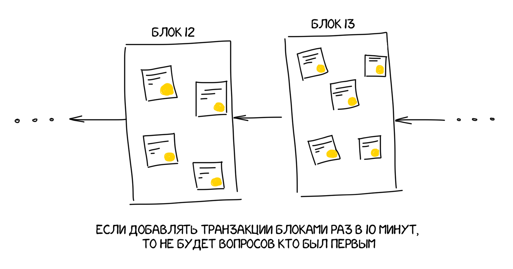

Ответ прост: это невозможно. Нет способа подтвердить время транзакции в децентрализованной сети. И вот в решении этой проблемы и заключается третья важная идея блокчейна, которую придумал Сатоши и которая, как ни странно, прописана прям в его названии — блоки.
